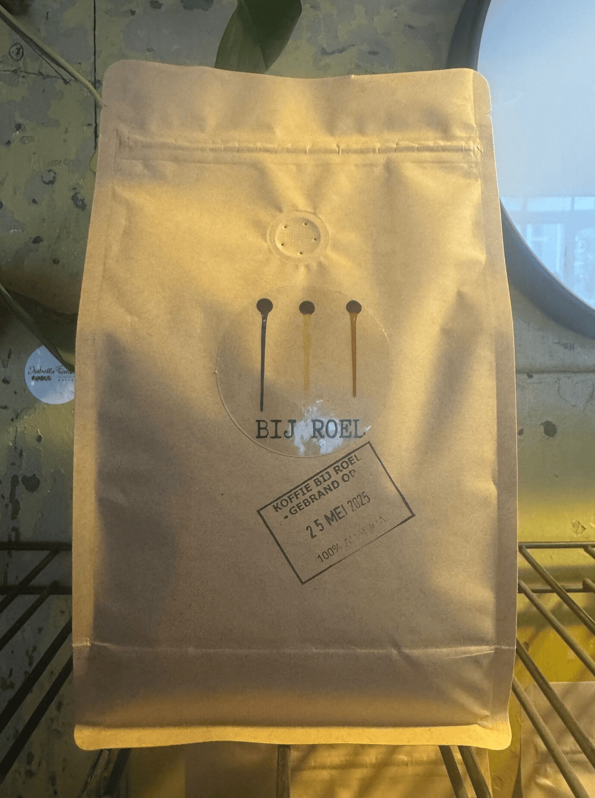

Proef onze Koffiebonen
Vers gebrand, 100% Arabica en perfect voor espresso én filter. Lees alles over herkomst, branding, maling en de beste manieren voor thuis.
- Vers gebrand — optimale smaak en aroma
- Transparante herkomst — traceerbare origine
- Advies op maat — voor espressomachine of filter

Hoe zet je de beste koffie
Met de juiste maling, verhouding en wat aandacht haal je het beste uit onze bonen. Hier zijn de basisrichtlijnen:
- Espresso: 18g in, ~36g uit in 25–30 seconden. Gebruik een fijne maling en tamp stevig.
- Filter (V60): 15g koffie op 250g water. Middelfijne maling, totale tijd 2:30 — 3:00 minuten.
- French press: 1:15 verhouding (bv. 30g op 450g water). Grof malen, 4 minuten laten trekken.
- Algemeen tip: gebruik gefilterd water (92–96°C), weeg koffie en water af, en pas de maling aan naar smaak: te zuur → fijner, te bitter → grover.
Duurzaamheid & betrouwbaarheid
Eerlijke keten
We werken samen met betrouwbare importeurs die inzetten op eerlijke prijzen en langdurige relaties met boeren. Traceerbaarheid staat centraal.
Constante kwaliteit
Elke batch wordt geproefd (cupping) en aangepast op smaak. Zo blijft het profiel herkenbaar: romig, nootig en met een zoete afdronk.
Haal je bonen direct in de winkel
Onze vers gebrande koffiebonen zijn altijd op voorraad in de winkel. Kom langs, ruik de aroma's en neem je favoriete zak mee naar huis. Wij je advies over maling of zetmethode? We helpen je graag persoonlijk. Daarnaast kun je een kopje proeven voor je koopt.
Kom langs en proef het verschil — je vindt ons in de winkel!